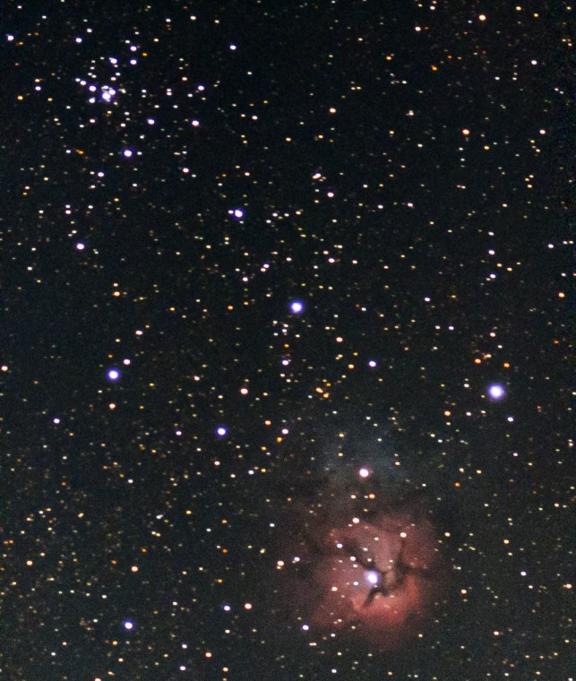
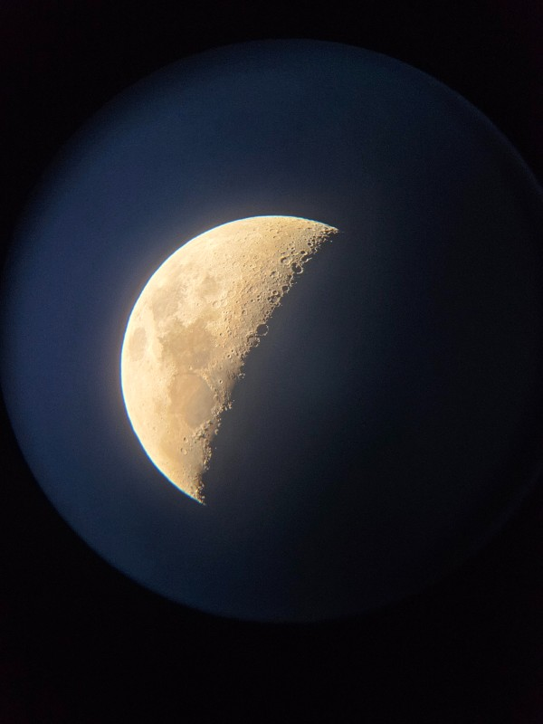

First off, I'd like to ask you: What's something we're all used to knowing about space but odd once you think about them some more?
Would it be the chaotic mess of dust and stars out there and everywhere?
Would it be size of the planets that aren't too far from us?

Or even the fact we have a giant rock rock in our night sky which is considered normal for us?
For me, it would be something much smaller than that.